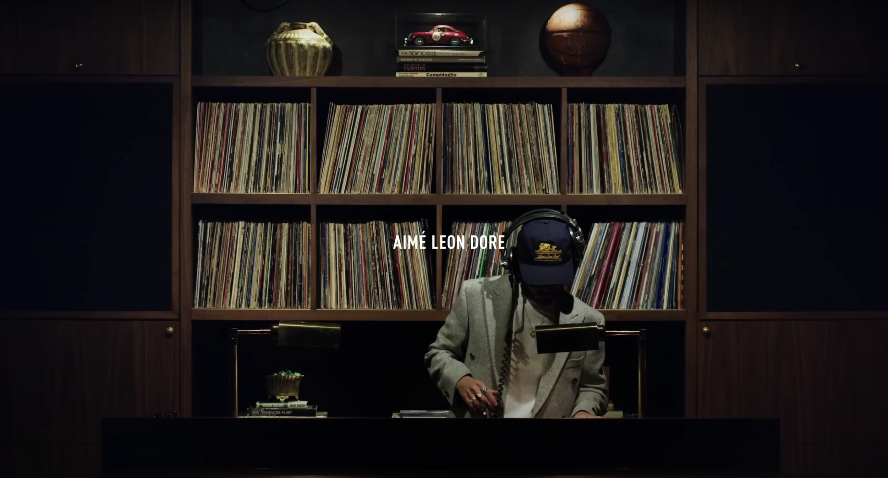
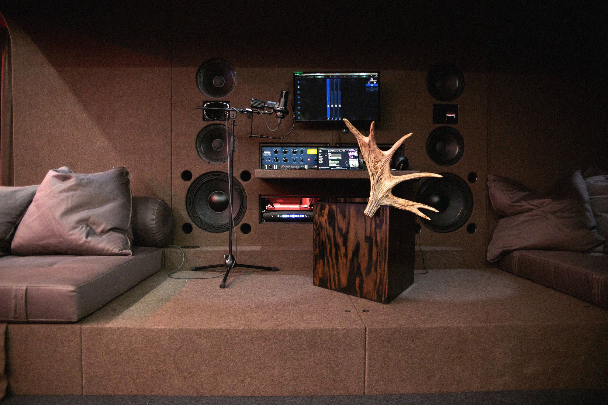
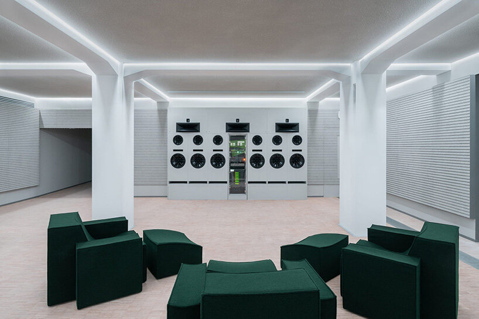

Listening as a culture,
Speakers as the language
LUKE KIM

There’s a difference between hearing and listening. Recently, a subculture has quietly grown around the idea of listening as a form of focus—an act of care and design. This movement has expanded beyond sound fidelity into a culture of curation and visual expression.

The listening experience has become more than an audiophile’s hobby—it’s evolved into a lifestyle, a spatial practice, and a design discipline. From homes and studios to cafes and concept stores, speakers have taken on new meaning. They’re no longer just technical objects—they’re sculptural, symbolic, and communicative. They become stand-ins for the values of nature, or a ‘do it yourself’ sensibility

Creatives have embraced this. Dieter Rams treated speakers with the same clarity and restraint as any other household object, embedding sound into modernist living. OJAS reintroduced the rawness of DIY speaker building—bringing back the honesty of cables, plywood, and modular parts. SYNG approaches sound as spatial architecture, blending audio technology with sculptural form. Tom Sachs pushes even further, turning sound into a conceptual object—where the speaker becomes part of a larger narrative about labor, value, and systems.

A new trend has emerged that places high-fidelity (hi-fi) audio and curated listening spaces at the center of design, retail, and cultural experiences. No longer gatekept by audiophiles, the hi-fi listening room trend blends sound, aesthetics, and spatial design to create a carefully curated space where the audience can experience sound—it becomes a part of branding, storytelling, and marketing.

This trend particularly benefits creative brands and retailers looking to attract more customers. Whether through a fashion boutique with a dedicated hi-fi room, a concept store with a listening lounge, or a coffee shop, these spaces invite customers to explore and promote engagement with the brand.

The rise of hi-fi listening spaces shows how brands move beyond just selling products—creating experiences. This shift was especially clear at Milan Design Week 2025, where furniture and fashion brands alike embraced sound as a core design element. Installations by Stone Island, Waka Waka, and others transformed showrooms into immersive listening rooms—blending materials, seating, and custom audio systems to build identity through atmosphere. By integrating high-quality sound into their physical spaces, brands are no longer just curating what you see, but how you listen. Music becomes a medium for storytelling, mood-setting, and connection—an essential layer in how people interact with the brand.